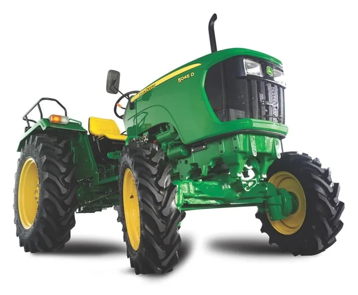

ସଂକ୍ଷିପ୍ତ ଉତ୍ତର
- ସବସିଡି: 48 HP ପର୍ଯ୍ୟନ୍ତ ଟ୍ରାକ୍ଟରରେ ₹1,20,000; 50 HP ଓ ତାଠାରୁ ଅଧିକରେ ₹1,50,000 (ଯୋଗ୍ୟତା ଓ DBT ଅନୁମୋଦନ ସାପେକ୍ଷରେ)।
- କେଉଁଠି ଆବେଦନ: Go-Sugam ରେ ଥରେ ପଞ୍ଜୀକରଣ କରନ୍ତୁ, ତା’ପରେ FM-DBT ପୋର୍ଟାଲରେ (fmdbt.agriodisha.nic.in) ବୁକ୍ କରନ୍ତୁ।
- ପରମିଟ୍: ନିଜେ ପଇସା ଦେଲେ 30 ଦିନ, ବ୍ୟାଙ୍କ ଋଣରେ 45 ଦିନ ବୈଧ।
- ପରବର୍ତ୍ତୀ ଟ୍ରାକ୍ଟର ଟାର୍ଗେଟ୍: 1 ଓ 15 ଡିସେମ୍ବର 2026, 1 ଓ 15 ଜାନୁଆରୀ 2027। ସେହି ଦିନ ଅପରାହ୍ନ 3ଟାରୁ ବୁକିଂ ପୁଣି ଖୋଲେ।
- ପେମେଣ୍ଟ: ଡିଲରଙ୍କ ଯାଞ୍ଚ ପରେ ସବସିଡି ଆପଣଙ୍କ Aadhaar ସହ ଯୋଡ଼ା ବ୍ୟାଙ୍କ ଖାତାକୁ ଆସେ।
ସରକାରୀ ଉତ୍ସ: FM-DBT ପୋର୍ଟାଲ୍ · Go-Sugam · Krushak Odisha · Operational Modality 2026 (PDF)। ଏହି ତଥ୍ୟ 21 ନଭେମ୍ବର 2026 ରେ ଏଗୁଡ଼ିକ ସହ ମିଳାଇ ଯାଞ୍ଚ କରାଯାଇଛି।

2026 ରେ ଓଡ଼ିଶା ଟ୍ରାକ୍ଟର ସବସିଡି କେତେ?
ସବସିଡି ଟ୍ରାକ୍ଟରର ଇଞ୍ଜିନ୍ ଶକ୍ତି ଉପରେ ନିର୍ଭର କରେ:
| ଟ୍ରାକ୍ଟର ଶକ୍ତି | ସବସିଡି | ଏହି ଶ୍ରେଣୀର John Deere ମଡେଲ୍ |
|---|---|---|
| 48 HP ପର୍ଯ୍ୟନ୍ତ | ₹1,20,000 | 3036EN (35 HP, 4WD), 5036D (36 HP, 2WD), 5105 (40 HP, 2WD & 4WD), 5039D PowerPro (41 HP, 2WD), 5042D PowerPro (44 HP, 2WD), 5045D PowerPro (46 HP, 2WD & 4WD) |
| 50 HP ଓ ତାଠାରୁ ଅଧିକ | ₹1,50,000 | 5050D (50 HP, 2WD & 4WD), 5310 (57 HP, 2WD & 4WD), 5405 (63 HP, 2WD & 4WD), 5075E (76 HP, 4WD) |
ସବସିଡି ରାଶି ଓଡ଼ିଶା ସରକାର ସ୍ଥିର କରନ୍ତି ଏବଂ DBT ଅନୁମୋଦନ ପରେ ହିଁ ମିଳେ। ରୋଟାଭେଟର୍, କଲ୍ଟିଭେଟର୍ ଭଳି ଯନ୍ତ୍ରପାତିର ଏହି ଯୋଜନାରେ ଅଲଗା ସବସିଡି ଅଛି।
କିଏ ଆବେଦନ କରିପାରିବେ?
ବୈଧ Farmer ID ଥିବା ଓଡ଼ିଶାର ଯେକୌଣସି ଚାଷୀ ଆବେଦନ କରିପାରିବେ, ଜମି ଯେତିକି ହେଉ। ପାଣି ପଞ୍ଚାୟତ, ମହିଳା ସ୍ୱୟଂ ସହାୟକ ଗୋଷ୍ଠୀ ଓ ସମବାୟ ସମିତି ଜଣେ ମନୋନୀତ ସଦସ୍ୟଙ୍କ ମାଧ୍ୟମରେ ଆବେଦନ କରିପାରିବେ।
ଆବେଦନ ପୂର୍ବରୁ ଜାଣିବା ଦରକାର ଦୁଇଟି ନିୟମ:
- ଟ୍ରାକ୍ଟରଟି 5 ବର୍ଷ ରଖିବାକୁ ହେବ। ତା’ପୂର୍ବରୁ ବିକିଲେ ସବସିଡି ଫେରସ୍ତ ନିଆଯାଇପାରେ।
- ଟ୍ରାକ୍ଟର-ଚାଳିତ ଯନ୍ତ୍ରପାତି କେବଳ ଟ୍ରାକ୍ଟର ମାଲିକଙ୍କ ପାଇଁ, ପ୍ରତି ଟ୍ରାକ୍ଟର ପଞ୍ଜୀକରଣରେ ପ୍ରତ୍ୟେକ ପ୍ରକାରର ଗୋଟିଏ।
କେଉଁ କାଗଜପତ୍ର ଦରକାର?
- Farmer ID (କୃଷକ ଓଡ଼ିଶା)
- Farmer ID ସହ ଯୋଡ଼ା Aadhaar
- ବ୍ୟାଙ୍କ ଖାତା ସହ ଯୋଡ଼ା Aadhaar (ସବସିଡି Aadhaar-Based Payment System ରେ ଆସେ)
- ପଞ୍ଜୀକୃତ ମୋବାଇଲ୍ ନମ୍ବର, ପ୍ରତି ପଦକ୍ଷେପର OTP ପାଇଁ
- ବ୍ୟାଙ୍କ ଋଣ ପାଇଁ: CIBIL ସ୍କୋର୍ 700 ରୁ ଅଧିକ, ସହ ଋଣଦାତାଙ୍କ ସାଧାରଣ କାଗଜ, ଯେପରି ଜମି ରେକର୍ଡ, ବ୍ୟାଙ୍କ ଷ୍ଟେଟମେଣ୍ଟ, PAN ଓ ଫଟୋ
ଆପଣଙ୍କ Farmer ID ରେ Aadhaar ଯୋଡ଼ା ହୋଇନଥିଲେ, ବ୍ଲକ୍ କୃଷି ଅଧିକାରୀ ଯୋଡ଼ିଦେଇପାରିବେ।
ପଦକ୍ଷେପ ଅନୁସାରେ କିପରି ଆବେଦନ କରିବେ
- ପଞ୍ଜୀକରଣ। Farmer ID, Aadhaar ଓ ମୋବାଇଲ୍ ନମ୍ବର ସହ କୃଷକ ଓଡ଼ିଶା ଓ Go-Sugam (sugam.odisha.gov.in) ରେ ପଞ୍ଜୀକରଣ କରନ୍ତୁ।
- FM-DBT ରେ ଲଗଇନ୍। 2026-27 ରୁ ଟ୍ରାକ୍ଟର ବୁକିଂ ଓ ପରମିଟ୍ FM-DBT ପୋର୍ଟାଲରେ (fmdbt.agriodisha.nic.in) ହୁଏ। Farmer ID ଓ Aadhaar ଦେଇ ଲଗଇନ୍ କରି OTP ନିଶ୍ଚିତ କରନ୍ତୁ।
- ଗଞ୍ଜାମରେ ଟାର୍ଗେଟ୍ ଥିବା ବେଳେ ବୁକ୍ କରନ୍ତୁ। ବୁକିଂ ପର୍ଯ୍ୟାୟକ୍ରମେ ଖୋଲେ ଓ 10 ଦିନ ରଖାଯାଏ।
- କମ୍ପାନୀ, ମଡେଲ୍ ଓ ଡିଲର ବାଛନ୍ତୁ। John Deere, ଆପଣଙ୍କ ମଡେଲ୍ ଏବଂ ଗଞ୍ଜାମ ଡିଲର ତାଲିକାରୁ ସବିତା ଟ୍ରେଡର୍ସ ବାଛନ୍ତୁ। ଆମେ ସେହି ଦିନ ଅଫର୍ ଦାମ ଦେଉ।
- ପରମିଟ୍ ପ୍ରିଣ୍ଟ କରନ୍ତୁ। ନିଜେ ପଇସା ଦେଲେ 30 ଦିନ, ବ୍ୟାଙ୍କ ଋଣରେ 45 ଦିନ ବୈଧ।
- ପେମେଣ୍ଟ ଓ ଡେଲିଭରି। ଅନଲାଇନ୍ ପେମେଣ୍ଟ କରନ୍ତୁ, ବା ବ୍ୟାଙ୍କ ଡେଲିଭରି ଅର୍ଡର ଦିଏ। ପରମିଟ୍ ବୈଧତା ମଧ୍ୟରେ Aadhaar ଯାଞ୍ଚ ସହ ଡେଲିଭରି ହୁଏ।
- ଯାଞ୍ଚ। ଆମେ GPS-ଯୁକ୍ତ ଫଟୋ ଓ ଇନଭଏସ୍ ଅପଲୋଡ୍ କରୁ। କିଛି ଯନ୍ତ୍ର ପ୍ରତ୍ୟକ୍ଷ ଯାଞ୍ଚ ହୁଏ।
- ସବସିଡି ଜମା। ସବସିଡି ଆପଣଙ୍କ Aadhaar ସହ ଯୋଡ଼ା ବ୍ୟାଙ୍କ ଖାତାକୁ ଆସେ।
ନୂଆ ଟ୍ରାକ୍ଟର ଟାର୍ଗେଟ୍ କେବେ ଆସେ?
ଗଞ୍ଜାମ ସମେତ ପ୍ରତି ଜିଲ୍ଲା ପ୍ରତି ଯନ୍ତ୍ର ପାଇଁ ବାର୍ଷିକ ଟାର୍ଗେଟ୍ ପାଏ। କୃଷି ବିଭାଗର 31 ଅକ୍ଟୋବର 2026 ବିଜ୍ଞପ୍ତି ଅନୁଯାୟୀ ଷ୍ଟେଟ୍ ପୁଲ୍ ଅଧୀନରେ ନୂଆ ଟ୍ରାକ୍ଟର ଟାର୍ଗେଟ୍ ମାସକୁ ଦୁଇଥର ଅପଲୋଡ୍ ହୁଏ:
| ମାସ | ଟାର୍ଗେଟ୍ ତାରିଖ |
|---|---|
| ନଭେମ୍ବର 2026 | 2 ଓ 16 ନଭେମ୍ବର (ହୋଇସାରିଛି) |
| ଡିସେମ୍ବର 2026 | 1 ଓ 15 ଡିସେମ୍ବର |
| ଜାନୁଆରୀ 2027 | 1 ଓ 15 ଜାନୁଆରୀ |
ସେହି ଦିନମାନଙ୍କରେ ପୋର୍ଟାଲ୍ ଅପରାହ୍ନ 2ଟାରୁ 3ଟା ବନ୍ଦ ରହେ ଏବଂ 3ଟାରୁ ଟ୍ରାକ୍ଟର ବୁକିଂ ପୁଣି ଖୋଲେ। ଟାର୍ଗେଟ୍ ଶୀଘ୍ର ପୂରିଯାଇପାରେ, ତେଣୁ କାଗଜପତ୍ର ତିଆରି ରଖି ଆଗୁଆ ବୁକ୍ କରନ୍ତୁ।
ମୁଖ୍ୟ ସମୟସୀମା
| ବୁକିଂ ରଖାଯାଏ | 10 ଦିନ |
| ପରମିଟ୍, ନିଜେ ପଇସା ଦେଲେ | 30 ଦିନ |
| ପରମିଟ୍, ବ୍ୟାଙ୍କ ଋଣରେ | 45 ଦିନ |
| ମଡେଲ୍ ବଦଳ | ଥରେ, 25 ଦିନ ମଧ୍ୟରେ |
| ପରମିଟ୍ ଶେଷ ହୋଇଗଲେ | 3 ମାସ ପରେ ପୁଣି ଆବେଦନ |
ଟ୍ରାକ୍ଟର ଋଣ ସହ ସବସିଡି ନେଇହେବ କି?
ହଁ। ବୁକିଂର ପୂର୍ବରୁ ଋଣ ଫାଇଲ୍ ଆରମ୍ଭ କରନ୍ତୁ, କାରଣ 45 ଦିନ ପରମିଟ୍ ମଧ୍ୟରେ ବ୍ୟାଙ୍କକୁ ଡେଲିଭରି ଅର୍ଡର ଦେବାକୁ ହେବ। ଋଣ ଡେରି ହେଲେ ପରମିଟ୍ ଶେଷ ହୋଇଯାଇପାରେ ଏବଂ ପୁଣି ଆବେଦନ ପାଇଁ 3 ମାସ ଅପେକ୍ଷା କରିବାକୁ ପଡ଼ିବ।
ଆମେ John Deere Financial, ବ୍ୟାଙ୍କ ଓ ଫାଇନାନ୍ସ କମ୍ପାନୀ ସହ କାମ କରୁ। ଟ୍ରାକ୍ଟର ଋଣ ପାଇଁ ଆପଣଙ୍କ CIBIL ସ୍କୋର୍ 700 ରୁ ଅଧିକ ହେବା ଦରକାର। ଡାଉନ୍ ପେମେଣ୍ଟ ଓ କିସ୍ତି ଯୋଜନା ପାଇଁ ଆମ EMI କାଲକୁଲେଟର୍ ବ୍ୟବହାର କରନ୍ତୁ।
ଡେଲିଭରି ପୂର୍ବରୁ ଚାଷୀଙ୍କ ମୃତ୍ୟୁ ହେଲେ କ’ଣ ହେବ?
5 ନଭେମ୍ବର 2026 ରେ FM-DBT ପୋର୍ଟାଲରେ ଦିଆଯାଇଥିବା ପ୍ରକ୍ରିୟା ଅନୁଯାୟୀ: ଚାଷୀ ପଇସା ଦେଇସାରି ଅନଲାଇନ୍ ଯୋଗାଣ ସରିବା ପୂର୍ବରୁ ମୃତ୍ୟୁ ହେଲେ, ଜଣେ ଆଇନଗତ ଉତ୍ତରାଧିକାରୀ ସବସିଡି ଓ ଯନ୍ତ୍ର ପାଇପାରିବେ। ପତି/ପତ୍ନୀ ପ୍ରଥମ ଅଧିକାରୀ, ଯଦି ସେ ନୋଟାରୀ ଶପଥପତ୍ରରେ ଅନ୍ୟ ଉତ୍ତରାଧିକାରୀଙ୍କୁ ଅଧିକାର ନ ଦିଅନ୍ତି।
ଉତ୍ତରାଧିକାରୀ CDAO କାର୍ଯ୍ୟାଳୟରେ ମୃତ୍ୟୁ ପ୍ରମାଣପତ୍ର, ତହସିଲଦାରଙ୍କ ଆଇନଗତ ଉତ୍ତରାଧିକାରୀ ପ୍ରମାଣପତ୍ର, ଏକାଧିକ ଉତ୍ତରାଧିକାରୀ ଥିଲେ NOC ଶପଥପତ୍ର, ଏବଂ ନିଜର Aadhaar, ଭୋଟର୍ ID, Farmer ID ଓ ବ୍ୟାଙ୍କ ବିବରଣୀ ଦାଖଲ କରନ୍ତି। ଜିଲ୍ଲା କମିଟି ଯାଞ୍ଚ କରେ ଏବଂ ସବସିଡି ଉତ୍ତରାଧିକାରୀଙ୍କ ବ୍ୟାଙ୍କ ଖାତାକୁ ଆସେ।
ଟ୍ରାକ୍ଟର ଅନ୍-ରୋଡ୍ ଦାମ: MRP ରେ କ’ଣ ଯୋଗ ହୁଏ ›
ଉତ୍ସ
- FM-DBT ପୋର୍ଟାଲ୍, କୃଷି ଓ କୃଷକ ସଶକ୍ତିକରଣ ବିଭାଗ, ଓଡ଼ିଶା ସରକାର
- Go-Sugam, ଓଡ଼ିଶା ସରକାରଙ୍କ ସିଙ୍ଗଲ୍-ୱିଣ୍ଡୋ ପୋର୍ଟାଲ୍
- ଓଡ଼ିଶା ସରକାର, DBT ମୋଡରେ କୃଷି ଯାନ୍ତ୍ରିକୀକରଣର Operational Modality (2026)
- ଓଡ଼ିଶା ସରକାର, Operational Modality DBT-FM (2024)
- Krushak Odisha (ଚାଷୀ ପଞ୍ଜୀକରଣ)
ଚାଷୀମାନେ ପଚାରୁଥିବା ପ୍ରଶ୍ନ
John Deere 5045D ରେ କେତେ ସବସିଡି ମିଳିବ?
5045D PowerPro 46 HP, ତେଣୁ ଏହା 48 HP ପର୍ଯ୍ୟନ୍ତ ଶ୍ରେଣୀରେ: ₹1,20,000, ଯୋଗ୍ୟତା ଓ DBT ଅନୁମୋଦନ ସାପେକ୍ଷରେ।
5050D ଭଳି 50 HP ଟ୍ରାକ୍ଟରରେ କେତେ ସବସିଡି?
₹1,50,000। 50 HP ଓ ତାଠାରୁ ଅଧିକ ଟ୍ରାକ୍ଟର ଅଧିକ ରାଶି ପାଏ, ଯୋଗ୍ୟତା ଓ DBT ଅନୁମୋଦନ ସାପେକ୍ଷରେ।
ଓଡ଼ିଶା ଟ୍ରାକ୍ଟର ସବସିଡି ପାଇଁ କେଉଁଠି ଆବେଦନ କରିବି?
Go-Sugam ରେ ଥରେ ପଞ୍ଜୀକରଣ କରନ୍ତୁ, ତା’ପରେ FM-DBT ପୋର୍ଟାଲରେ (fmdbt.agriodisha.nic.in) ଟ୍ରାକ୍ଟର ବୁକ୍ କରି ପରମିଟ୍ ନିଅନ୍ତୁ। ଆମେ ସାହାଯ୍ୟ କରିପାରିବୁ।
ଗଞ୍ଜାମରେ ପରବର୍ତ୍ତୀ ଟ୍ରାକ୍ଟର ବୁକିଂ ତାରିଖ କେବେ?
1 ଓ 15 ଡିସେମ୍ବର 2026, ଏବଂ 1 ଓ 15 ଜାନୁଆରୀ 2027 ରେ ନୂଆ ଟାର୍ଗେଟ୍ ଅପଲୋଡ୍ ହେବ। ସେହି ଦିନ ଅପରାହ୍ନ 3ଟାରୁ ବୁକିଂ ଖୋଲେ।
ଟ୍ରାକ୍ଟର ଋଣ ପାଇଁ କେତେ CIBIL ସ୍କୋର୍ ଦରକାର?
ଆପଣଙ୍କ CIBIL ସ୍କୋର୍ 700 ରୁ ଅଧିକ ହେବା ଦରକାର। FM-DBT ରେ ବୁକିଂ ପୂର୍ବରୁ ଋଣ ଫାଇଲ୍ ଆରମ୍ଭ କରନ୍ତୁ, ଯାହାଦ୍ୱାରା 45 ଦିନ ପରମିଟ୍ ମଧ୍ୟରେ ବ୍ୟାଙ୍କ ଡେଲିଭରି ଅର୍ଡର ଦେଇପାରିବ।
ସବସିଡି ପରମିଟ୍ କେତେ ଦିନ ବୈଧ?
ନିଜେ ପଇସା ଦେଲେ 30 ଦିନ, ବ୍ୟାଙ୍କ ଋଣରେ 45 ଦିନ। ସେହି ସମୟ ମଧ୍ୟରେ ପେମେଣ୍ଟ ଓ ଡେଲିଭରି ସାରନ୍ତୁ।
ସବସିଡି ନେବା ପରେ ଟ୍ରାକ୍ଟର ବିକିପାରିବି କି?
5 ବର୍ଷ ରଖିବାକୁ ହେବ। ତା’ପୂର୍ବରୁ ବିକିଲେ ସବସିଡି ଫେରସ୍ତ ନିଆଯାଇପାରେ।
ସବିତା ଟ୍ରେଡର୍ସ ଗଞ୍ଜାମ ପାଇଁ ତାଲିକାଭୁକ୍ତ ଡିଲର କି?
ହଁ। ବ୍ରହ୍ମପୁରର ସବିତା ଟ୍ରେଡର୍ସ ଗଞ୍ଜାମ ଜିଲ୍ଲାର ଏକମାତ୍ର ଅନୁମୋଦିତ John Deere ଟ୍ରାକ୍ଟର ଡିଲର। ପୋର୍ଟାଲରେ ଗଞ୍ଜାମ ଡିଲର ତାଲିକାରୁ ଆମକୁ ବାଛନ୍ତୁ।
ଏମ୍ କୃଷ୍ଣ ରେଡ୍ଡୀ ସବିତା ଟ୍ରେଡର୍ସର ମ୍ୟାନେଜିଂ ଡିରେକ୍ଟର — ଗଞ୍ଜାମ ଜିଲ୍ଲାର ଏକମାତ୍ର ଅନୁମୋଦିତ John Deere ଟ୍ରାକ୍ଟର ଡିଲର, NH5 ପଥରା ବାଇପାସ୍ ଜଙ୍କସନ୍, ବ୍ରହ୍ମପୁର। ତାଙ୍କ ଟିମ୍ ଗଞ୍ଜାମର ଚାଷୀଙ୍କୁ ଟ୍ରାକ୍ଟର ବାଛିବା, ଋଣ ଓ ଓଡ଼ିଶା DBT ସବସିଡି ଆବେଦନରେ ସାହାଯ୍ୟ କରେ।
ସୂତ୍ର: ଓଡ଼ିଶା ସରକାର, Operational Modality for DBT in Farm Mechanisation (2024 ଓ 2026); FM-DBT ପୋର୍ଟାଲ୍ ବିଜ୍ଞପ୍ତି 31 ଅକ୍ଟୋବର 2026 (ଟ୍ରାକ୍ଟର ଟାର୍ଗେଟ୍) ଓ 5 ନଭେମ୍ବର 2026 (ଆଇନଗତ ଉତ୍ତରାଧିକାରୀ ପ୍ରକ୍ରିୟା, 8 ଡିସେମ୍ବର 2025 ର SOP ପତ୍ର); FM-DBT ଘୋଷଣା (ଅଗଷ୍ଟ 2026, Aadhaar-Based Payment System); ସବସିଡି ରାଶି ସବିତା ଟ୍ରେଡର୍ସରେ ଲାଗୁ ଥିବା ଅନୁଯାୟୀ, ନଭେମ୍ବର 2026; ଟ୍ରାକ୍ଟର HP John Deere India (deere.co.in) ରୁ। ନିୟମ ବଦଳିପାରେ: ବୁକିଂ ପୂର୍ବରୁ FM-DBT ପୋର୍ଟାଲ୍ ଦେଖନ୍ତୁ ବା ଆମକୁ ପଚାରନ୍ତୁ।